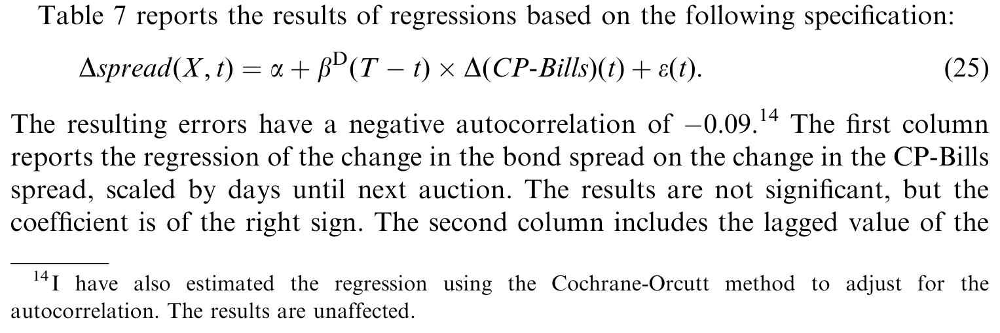
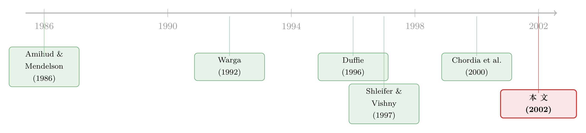

利差明明在收敛，利润却归零：一笔被 repo 悄悄吃掉的「免费午餐」
本文读的是 Krishnamurthy (2002, Journal of Financial Economics)：作者把「做多旧 30 年期国债、做空新 30 年期国债」这笔著名的收敛交易，从 1995 到 1999 年逐日记了一遍账，结论令人意外——尽管利差几乎每个拍卖周期都在系统性收敛，这笔交易的平均利润却接近于零。罪魁祸首是两只债券在回购市场上的融资利率差（repo carry cost）。而剩下那部分没被套利抹平的利差，则由 30 年期国债的供给与投资者对流动性的总体偏好共同决定。
1 一个看上去稳赚不赔的故事
先讲一个华尔街最爱讲的故事。
在所有国债里，30 年期美国国债大概是交易最活跃的一只，长期以来它都是美国长端利率的基准。财政部过去差不多每半年拍卖一次新的 30 年期债。新债一上市，就被冠以「新券（new bond / on-the-run）」的名头，接过基准地位，而半年前发行的那只就降级为「旧券（old bond / off-the-run）」。
奇妙的事情就发生在这里：新券总是比旧券贵。论文里的图 1 给了 2001 年 2 月 9 日的一张快照——最新一对新旧券的利差是 12 个基点，而上一代新旧券之间只剩 3 个基点，再往前一代更是只有 1 个基点。换句话说，「新」这个身份本身就值十几个基点，而且这个溢价会随着新券变旧而一路收窄、趋向于零。
于是一笔几乎写在教科书上的收敛交易（convergence trade）呼之欲出：
- 新券一上市，就在
12bps 的利差上把它卖空； - 同时买入便宜的旧券，把这个利差敞口锁住；
- 一直持有到下一次拍卖，那时利差大概率已经缩到
3bps，反手平仓，把这中间的收敛收进口袋。
听上去像不像在捡钱？利差注定要收敛，你只要做空贵的、做多便宜的，耐心持有就行。这笔交易甚至进入了公众视野——它正是长期资本管理公司（LTCM）当年最有名的头寸之一，《经济学人》《纽约时报》《金融时报》都写过：「这两只债券没有什么经济理由收益率不同，可旧券就是常常比新券略便宜，LTCM 赌它们会收敛。」
论文的图 2 把这个利差（旧券减新券）的历史画了出来，竖线标记每个拍卖日。图确实印证了直觉：利差通常会在一个拍卖日到下一个拍卖日之间收窄。但图里也藏着一个刺眼的例外——1998 年秋天，利差在拍卖之后不收反扩，随后才慢慢回落。正是这一段，让持有收敛头寸的 LTCM 们吃下了惨重的浮亏。
这就是全文的张力所在：如果利差系统性地收敛，这笔交易凭什么不是免费的午餐？ 作者没有停留在「画图看趋势」，而是做了一件笨功夫——把这笔交易逐日的盈亏，连同真实的融资成本，一笔一笔算出来。
2 把账一笔一笔算清楚：交易的真实机制
要理解作者的发现，得先弄明白：做空一只国债，到底要付出什么代价？
关键在回购市场（repo market）。你想卖空新券，光「卖」是不够的——交割那天你手里得真有这只债去交。于是你要做一笔逆回购（reverse-repo）：把现金抵押给持券人，借来债券去交割，约定次日归还。你付出现金、借入债券，对方付给你的利息率，就是隔夜回购利率，记作 \(f(t)\)。
正常市场里，\(f(t)\) 应该等于隔夜无风险利率 \(r(t)\)——持券人把债借给你，拿到现金再去按无风险利率投资，跟不借出去没差别。可一旦某只债被疯抢（大家都想借它来做空），它在回购市场上就「供不应求」，融资利率被压到无风险利率之下，以此来配给稀缺的可借券。这时候这只债就「上特价（on special）」了。作者把这个「特价」的程度定义为：
$$s(t) = r(t) - f(t)$$
这就是全文里第一个、也是最朴素的方程（论文式 (1)）。\(s(t)>0\) 意味着：谁持有这只债，谁就能在回购市场上把它租出去，额外赚到 \(r(t)-f(t)\) 的「租金」。回购市场，本质上是一个债券的隔夜租赁市场。
现在回到那笔收敛交易。买入 \(y(t_n)\) 单位旧券、用回购利率 \(f(t_n)\) 融资、持有到下一日的利润是（论文式 (2)）：
$$y(t_n)\left[\,P(t_{n+1})-P(t_n)-P(t_n)\,f(t_n)\,\frac{t_{n+2}-t_{n+1}}{360}\,\right]$$
同样地，做空 \(\hat{y}(t_n)\) 单位新券、用 \(\hat{f}(t_n)\) 做逆回购的利润是（论文式 (3)）：
$$-\hat{y}(t_n)\left[\,\hat{P}(t_{n+1})-\hat{P}(t_n)-\hat{P}(t_n)\,\hat{f}(t_n)\,\frac{t_{n+2}-t_{n+1}}{360}\,\right]$$
总利润就是两者之和。为了让这笔头寸只对利差敏感、而对两只债同向的利率变动免疫，作者按久期中性来配置仓位（论文式 (4)）：
$$y(t_n)\,DP(t_n)=\hat{y}(t_n)\,D\hat{P}(t_n)$$
其中 \(DP\) 是价格对到期收益率的导数。剩下唯一的自由度 \(y(t_n)\)，作者让 \(y(t_n)\,DP(t_n)\) 恒等于 1000——这样「利差变动 10 个基点，利润大约就是 $1{,}000\times0.001=\$1$」，整个样本里 \(y\) 平均约为 $75 面值的债。
把目光聚回式 (2)，这才是整篇论文的「核心方程」。它把一只债的持有收益拆成两块：
直觉是这样的：所有人盯着 a1（利差收敛），却几乎没人认真算 a2。而当你做空的新券「上特价」（\(\hat{f}\) 很低）、做多的旧券却没那么特价（\(f\) 较高）时，你做空那条腿赚的回购利息少、做多那条腿付的回购利息多——这一进一出的 carry，会反过来把收敛的利得一点点吃掉。
3 反转：把 repo 算进去，利润就没了
作者用 1995 年 6 月 12 日到 1999 年 11 月 15 日、共 1,157 个交易日的数据，把这笔交易的逐日盈亏算了出来（为压住买卖价差跳动和陈旧报价的噪声，再聚合成周度）。样本里有 11 个拍卖周期，平均发行规模 $11.40bn，平均两次拍卖间隔 82 天，平均利差（旧券−新券）6.25 bps。
结果呢？平均周度利润是 0.0016。
让我们把这个数字放进语境里。它是「做多约 $75 旧券 + 做空 $75 新券」这个头寸一周的总盈亏。换算一下：除以 75、再乘 52 年化，得到的是每 $1 债券每年 11.1 个基点。注意，作者还做了五年数据，却无法拒绝「真实利润等于零」的原假设——这个均值的标准误高达 34 bps，周度利润的自相关只有 −0.033。而这还是在假设所有交易都按买卖中点成交、唯一引入的真实成本就是融资成本的前提下得到的。
那么，如果忽略回购市场、把两只债的融资都按隔夜一般抵押品（GC）利率算呢？同样这个数字会变成 33.3 bps 每年每 $1。
一句话：忽略 repo，这笔交易是赚钱的；算进 repo，利润几乎归零。 罪魁祸首就是回购成本。更糟的是——交易看上去最赚钱（利差最高）的时候，恰恰也是回购成本最高的时候。
这一点在 1998 年秋天体现得淋漓尽致。论文里把八周移动平均的盈亏画了出来：截至 1998 年 5 月的那段，平均周度利润是 0.0125（年化 87 bps）；而在那之后，平均利润跌到 −0.0184 每周（年化 −128 bps）。第二个、也更隐蔽的原因，正是两只债的回购利率差——它本身就是持有收敛头寸的一项 carry。作者把它单独画成一条虚线，两条线的相关系数是 0.40。
数字更触目惊心：1998 年 5 月之前，新旧券的回购利率差平均只有 5 bps（旧券>新券）；之后这个差跳到平均 55 bps；而在 1998 年 5 月到 11 月那个周期（第 9 周期），差值平均高达 158 bps。回购利率的波动幅度，和利润的波动幅度处在同一量级——这恰恰说明它对这笔交易的盈亏有多关键。
作者由此得出一个冷静的结论：单凭「能长期锁定资本」去赌收敛，并不能赚到超额收益。要在收敛上赚钱，套利者必须做某种程度的「择时（market timing）」——只在 1998 年秋天之前下注是赢家策略，之后再下注，哪怕一直持有到 1999 年底，也是亏钱的。这么看，收敛交易和任何别的投资策略并没有本质区别。（关于「稳赚的套利其实从来不为零」这件事，可参见《被「藏起来」的收益：当一个三十年回报为零的策略，其实从不为零》；而「在压路机前面捡硬币」的固定收益套利，则可参见《捡硬币的人，真的站在压路机前面吗？》。）
这个发现的杀伤力，在于它正面顶撞了既有的流动性理论。Amihud and Mendelson (1986)、Boudoukh and Whitelaw (1993)、Vayanos (1998) 这一系模型都预言：流动性差的资产（旧券）应当提供更高的回报，以补偿其交易成本。Warga (1992) 等大量实证也验证了这一点。可作者发现，一旦把回购利率和新券的「特价」算清楚——「特价」意味着新券持有者能把券借出去、额外赚到隔夜利率与回购利率之差——新旧两只债的回报其实是一样的。这不过是「收敛利润为零」的另一种说法，却与既有理论背道而驰。
4 那利差到底由什么决定？需求与供给两条线
既然套利没能把利差抹平，一个自然的问题就是：剩下的这个利差，由什么决定？
论文第 5 节借鉴 Duffie (1996) 搭了一个模型来调和这些发现，嵌入两个假设：第一，在边际上，对某一类投资者而言，新旧两只债是不完全替代品（imperfect substitutes）；第二，这类投资者并不充分参与回购市场。在这两个条件下，作者证明：利差将由这类投资者对新券的边际估值决定下来。换句话说，价格不是被套利者拉平的，而是被这群「不玩回购」的投资者的偏好「钉」住的。
接着，作者拿出两块证据来刻画这群投资者的估值。
第一块是需求侧——流动性偏好。这里有一个聪明的识别（identification）设计。作者要给「流动性需求的变化」找一个工具变量（instrument），他用的是三个月商业票据（commercial paper, CP）与三个月国库券（Treasury Bills）的利差，即 CP-Bills 利差。逻辑是：商业票据几乎完全不流动——它基本无法在到期前买卖；而国库券是市场上最流动的证券之一。如果投资者偏好流动性，他们就会要求 CP 相对 T-bills 给出溢价。于是 CP-Bills 利差就成了「市场总体流动性需求」的一把尺子。
结果很漂亮：当 CP-Bills 利差高时，bond/old-bond 利差也高；而且这个关系还随拍卖周期系统性地变化——离拍卖日越远，流动性需求效应越强；越靠近拍卖日，效应越小（但不为零）。这与作者的理论一致：离拍卖越远，新券作为「更流动资产」的相对优势能维持更久，因此流动性最被看重。效应在量级上也不小：把时间固定在距拍卖一年处，CP 相对 T-bills 的价格变动 1%，会传导为 bond 相对 old-bond 价格 5% 的变动。
第二块是供给侧——发行规模。流动性假说的根基是「非饱和（nonsatiation）」：投资者手里的新 30 年期债不够多，满足不了他们持有长期流动资产的欲望。这就意味着，如果财政部增发，投资者手里的「流动性载具」变多，溢价就该下降。数据支持了这一点：更小的发行规模，对应更宽的 bond/old-bond 利差。（供给如何外溢到国债定价，可参见《一张资产负债表，两个市场：当国债拍卖悄悄挤掉了 MBS 的做市能力》。）
下面这张表汇报了利差决定因素的回归结果——需求（CP-Bills 及其与到期时间的交互）与供给（发行规模）同时进入方程。

Table 7: reports the results of regressions based on the following specification:
值得一提的是样本里的供给故事很具体：最小的一次拍卖是 2027 年 2 月 15 日到期的 6.625 债，规模仅 $10.45bn；样本里还有一次「重开（reopening）」——2027 年 11 月 15 日到期的 6.125 债被重开，总发行量做到了 $22.51bn。这些规模上的差异，给供给假说提供了横截面的识别变异。
5 文献脉络
把这篇论文放回它所处的研究谱系里，故事会更清楚。
最早的一条线是交易成本与流动性溢价。Amihud and Mendelson (1986) 用买卖价差刻画流动性，开创了「流动性差的资产要给更高回报」这一范式；Boudoukh and Whitelaw (1993)、Vayanos (1998) 进一步把交易成本写进动态均衡模型。实证上，Warga (1992)、Amihud and Mendelson (1991)、Kamara (1994) 大体验证了这条预言——投资 off-the-run 比投资流动的 on-the-run 回报更高。

但这条线有个盲点：它默认你能「免费」地持有那只便宜的资产。真正的转折来自 Duffie (1996)——他给出了一个允许卖空、且让「特价」与流动性问题共存的回购市场理论模型，并指出回购市场的特价也会反映为现券市场的价格溢价。Jordan and Jordan (1997)、Buraschi and Menini (2002) 在数据里确认了这一点。本文的实证正是被 Duffie 这套框架点燃的：它第一次把 repo 利率显式地塞进收敛交易的盈亏账，从而戳破了「流动性溢价等于免费午餐」的幻觉。
与此并行的，还有收敛交易与套利极限这条线。Shleifer and Vishny (1997)、Xiong (2001)、Yuan (1999) 都强调：1998 年秋天那样的利差剧烈波动，源于套利资本（对冲基金）被融资约束「卡」住了——这是「流动性供给」侧的故事。本文的盈亏时间序列与其相互呼应，但作者做了一个微妙的区分：他用 CP-Bills 利差证明，利差里有相当一部分变动纯粹来自流动性需求的变化，而非套利资本的枯竭。这也把流动性文献（Chordia, Roll, and Subrahmanyam, 2000 关于流动性共动的发现）和宏观经济学里关于 CP-Bills 利差的文献（Stock and Watson, 1989；Friedman and Kuttner, 1992, 1993）接上了头。
评论与延伸（Q&A + 研究方向）
(a) 几个可能的疑问
Q：利差明明在收敛，为什么利润还会是零？这不矛盾吗？
不矛盾。收敛带来的资本利得是真的（式 (2) 的
a1项），但你做空新券时，新券「上特价」、回购利率被压得很低，你做空那条腿吃到的利息变少；而做多旧券要付的融资利息相对更高。这一进一出的 carry（a2项的新旧差额）恰好把收敛利得抵消掉。重点是：利差越大的时候，往往也是新券特价越深、carry 成本越高的时候，二者同向，所以「看起来最赚」时反而最不赚。
Q：作者凭什么说这推翻了流动性溢价理论？
传统理论说「流动性差的旧券回报更高」，但它隐含假设你能无摩擦地持有这只便宜资产。本文把回购市场的「特价」收益算进新券——新券持有者能把券借出去额外赚 \(r-f\)。把这块加回来后，新旧两只债的总回报相等，所谓「流动性溢价」在净回报口径下消失了。理论没错，只是漏算了一笔 repo 上的隐性收益。
Q：用 CP-Bills 利差当流动性需求的工具变量，可信吗？
这是全文识别最依赖的一步。优点是 CP 几乎不可交易、T-bill 极度流动，二者利差天然刻画了「对流动性的偏好」；而且作者展示了它对 bond/old-bond 利差的影响随拍卖周期单调变化（离拍卖越远越强），这种与理论一致的横截面模式，比单纯一个正相关更有说服力。隐忧在于排他性约束：CP-Bills 利差也可能反映信用风险或货币政策，未必只走「流动性需求」这一条通道。
Q：1998 年秋天的利差暴走，到底是「需求」还是「套利资本枯竭」？
作者诚实地承认两者都在起作用、且难以完全分离。Shleifer-Vishny 一系强调套利资本约束（供给侧），而作者用 CP-Bills 同期也大幅走阔来论证需求侧的贡献。但他自己也写道，「这次利差上升里，多少来自套利资本、多少来自流动性需求，仍是一个问题」。这是本文识别上最坦诚的留白。
Q：那作者是说收敛交易完全不能赚钱吗？
不是。他说的是：单凭「能长期锁住资本」并不够。在 1998 年危机之前下注是赚的，之后下注是亏的——要盈利必须做择时。这把收敛交易从「无风险套利」拉回到了「和别的策略一样需要判断时机」的位置。
Q：财政部 2001 年宣布停发 30 年期债，这篇论文还成立吗？
机制依然成立，只是「新券」这个特定的基准载体会换人。本文的核心是「基准/流动性溢价 + 回购特价 + 供给」三者如何共同定价，这套逻辑可以平移到任何有 on-the-run/off-the-run 结构的市场（如 10 年期债、甚至别国国债）。供给侧的预言反而提供了一个有趣的反事实：减少供给，溢价应当走阔。
(b) 几个可能的研究问题与提案
1. 把同一套「repo 调整后净回报」搬到公司债的 on-the-run 结构上
【经济故事】公司债里也有「新发 vs. 老券」的流动性分层，且新发债常被超额配售、做空与回购同样存在。若用本文方法把 repo/借券成本算进公司债的相对价值交易，很可能发现信用利差里被归为「流动性溢价」的部分，有一块其实是借券成本。 【可行性】中。需要公司债的逐笔成交（TRACE）加上券借贷/repo 利率数据，后者获取难度较大；识别上可借用同一发行人不同新旧券的配对来控制信用基本面。
2. 用 CP-Bills 之外的流动性需求工具，做稳健性与外部效度检验
【经济故事】本文的需求侧结论高度依赖 CP-Bills 这一个工具。若换用货币基金净流入、国债 ETF 申赎、或 MOVE 指数等其他「流动性偏好」代理，能验证 5% 这个弹性是否稳健，并把「流动性 vs. 信用」两条通道拆开。 【可行性】高。数据多为公开（FRED、ETF 申赎、期权隐含波动率），可直接做工具变量竞赛与过度识别检验。
3. 外资持有人结构如何改变 on-the-run 溢价的供给弹性
【经济故事】本文的供给假说建立在「投资者非饱和」上。外国官方机构（如各国央行）对美国国债有特殊的流动性/储备需求，且他们往往持券不借出（不参与回购）——这恰好是模型里那群「不玩 repo」的边际投资者。外资持有占比的变化，应当系统性地放大或缩小新旧券利差。 【可行性】中。可用 TIC 数据或拍卖中的间接投标（indirect bid）份额作为外资需求的代理，与 on-the-run 溢价做面板回归；识别上可利用外汇储备的外生冲击（如汇率干预事件）。
4. 危机期的「需求 vs. 套利资本」分解
【经济故事】本文坦承 1998 年的利差暴走难以拆分需求与套利资本两条线。若能找到只冲击套利资本、不冲击终端流动性需求的事件（如对冲基金集中去杠杆、保证金骤升），就能干净地识别供给侧贡献。 【可行性】中到低。需要交易商层面的头寸/杠杆数据（如一级交易商持仓），获取困难；但 2008 与 2020 两次危机提供了更多事件窗口。（相关思路可参见《互换利差为何敢于「转负」：把套利的风险，算进价格里》。）
我的判断
这篇论文的贡献，在我看来不在于提出了什么新理论（作者自己在脚注里都坦白「本文不提供弥合流动性溢价之谜的新理论洞见」），而在于一种朴素到近乎固执的实证态度：别人画图看趋势、讲故事，他把一笔交易逐日的盈亏连同真实的回购融资成本一笔笔记下来，然后告诉你——那个人人以为的免费午餐，净额其实接近于零。把 repo carry 显式地引入相对价值交易的盈亏核算，这个动作本身就纠正了流动性溢价文献里一个长期被忽视的口径错误。它的说服力来自数据的笨功夫，而非模型的巧劲。
对识别的担忧，集中在需求侧那一步。CP-Bills 利差作为「流动性需求」的工具变量很优雅，但它同时承载着信用风险、货币政策预期等多重信息，排他性约束并非无懈可击；那个「1% → 5%」的弹性，换一把尺子（货币基金流、ETF 申赎）未必稳健。供给侧的回归则受制于样本只有 11 个拍卖周期、外加一次重开——横截面变异有限，结论方向可信，但精度难免吃紧。
后续我最想看到的，是把这套「repo 调整后净回报」的方法搬出国债、搬进公司债与信用市场：那里同样有新旧券分层、有借券成本、有外资与配置型投资者「持券不借」的边际定价者。如果在信用市场里也能证明「被归为流动性溢价的那一块，有相当部分其实是借券成本」，那本文的视角就不只是一个国债市场的注脚，而是一把能重新丈量整个信用利差的尺子。
参考文献
Amihud, Y., Mendelson, H. (1986). Asset pricing and the bid–ask spread. Journal of Financial Economics 17, 223–249.
Amihud, Y., Mendelson, H. (1991). Liquidity, maturity, and the yields on U.S. Treasury securities. Journal of Finance 46, 31–53.
Boudoukh, J., Whitelaw, R. (1993). Liquidity as a choice variable: a lesson from the Japanese government bond market. Review of Financial Studies 6, 265–292.
Buraschi, A., Menini, D. (2002). Liquidity risk and special repos: how well do forward repo spreads price future specialness. Journal of Financial Economics 64, 243–284.
Chordia, T., Roll, R., Subrahmanyam, A. (2000). Commonality in liquidity. Journal of Financial Economics 56, 3–28.
Duffie, D. (1996). Special repo rates. Journal of Finance 51, 493–526.
Friedman, B., Kuttner, K. (1992). Money, income, prices, and interest rates. American Economic Review 82, 472–492.
Jordan, B., Jordan, S. (1997). Special repo rates: an empirical analysis. Journal of Finance 52, 2051–2072.
Kamara, A. (1994). Liquidity, taxes, and short-term treasury yields. Journal of Financial and Quantitative Analysis 29, 403–417.
Krishnamurthy, A. (2002). The bond/old-bond spread. Journal of Financial Economics 66, 463–506.
Shleifer, A., Vishny, R. (1997). The limits of arbitrage. Journal of Finance 52, 35–55.
Stock, J., Watson, M. (1989). New indexes of coincident and leading economic indicators. NBER Macroeconomics Annual, 351–394.
Vayanos, D. (1998). Transaction costs and asset prices: a dynamic equilibrium model. Review of Financial Studies 11, 1–58.
Warga, A. (1992). Bond returns, liquidity, and missing data. Journal of Financial and Quantitative Analysis 27, 605–617.
Xiong, W. (2001). Convergence trading with wealth effects: an amplification mechanism in financial markets. Journal of Financial Economics 62, 247–292.